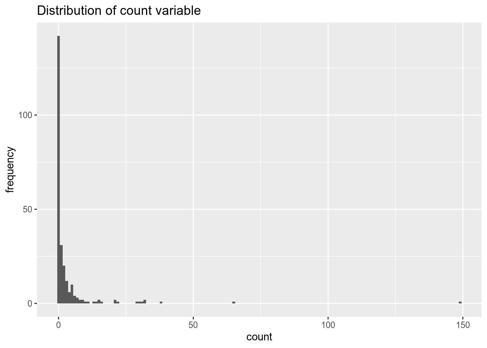

Коан 4 Модели счетных данных
Загрузим необходимые пакеты.
library(tidyverse) #работа с данными и графики
library(skimr) #красивое summary
library(rio) #чтение .dta файлов
library(vcd) #еще графики
library(MASS) #отрицательное биномиальное
library(lmtest) #для проверки гипотез
library(pscl) #zero-inflation functionError in library(pscl): there is no package called 'pscl'Error in library(margins): there is no package called 'margins'Импортируем данные.
Данные содержат информацию о количестве рыбы, пойманной людьми на отдыхе.
Camper - наличие/отсутсвие палатки. Child - количество детей, которых взяли на рыбалку. Persons - количество людей в группе. Count - количество пойманной рыбы
Посмотрим нам описательные статистики.
Skim summary statistics
n obs: 250
n variables: 4
── Variable type:numeric ─────
variable missing complete n mean sd p0 p50 p100
camper 0 250 250 0.59 0.49 0 1 1
child 0 250 250 0.68 0.85 0 0 3
count 0 250 250 3.3 11.64 0 0 149
persons 0 250 250 2.53 1.11 1 2 4Переменная camper принимает всего два значения, поэтому превратим ее в факторную переменную.
Наша задача - по имеющимся данным предсказать улов. Для начала посмотрим на распределение объясняемой переменной count.

Предположим, что переменная имеет распределение Пуассона. Будем использовать пуассоновскую регрессию. \[ P(y=k)=exp(-\lambda) \lambda^k / k! \] где \(\lambda=\exp(b_1 +b_2*x)\)
Call:
glm(formula = count ~ child + camper + persons, family = "poisson",
data = df)
Deviance Residuals:
Min 1Q Median 3Q Max
-6.8096 -1.4431 -0.9060 -0.0406 16.1417
Coefficients:
Estimate Std. Error z value Pr(>|z|)
(Intercept) -1.98183 0.15226 -13.02 <2e-16 ***
child -1.68996 0.08099 -20.87 <2e-16 ***
camper1 0.93094 0.08909 10.45 <2e-16 ***
persons 1.09126 0.03926 27.80 <2e-16 ***
---
Signif. codes: 0 '***' 0.001 '**' 0.01 '*' 0.05 '.' 0.1 ' ' 1
(Dispersion parameter for poisson family taken to be 1)
Null deviance: 2958.4 on 249 degrees of freedom
Residual deviance: 1337.1 on 246 degrees of freedom
AIC: 1682.1
Number of Fisher Scoring iterations: 6Посчитаем средний предельный эффект для каждой переменной.
Error in marginal_effects(poisson): could not find function "marginal_effects"Однако, заметим, что дисперсия и среднее значение объясняемой переменной не равны, как это предполагает распределение Пуассона.
# A tibble: 2 x 3
camper var mean
<fct> <dbl> <dbl>
1 0 21.1 1.52
2 1 212. 4.54Оценим регрессию, предполагая отрицательное биномиальное распределение остатков. В этом случае, дисперсия распределения зависит от некоторого параметра и не равна среднему.
Call:
glm.nb(formula = count ~ child + camper + persons, data = df,
init.theta = 0.4635287626, link = log)
Deviance Residuals:
Min 1Q Median 3Q Max
-1.6673 -0.9599 -0.6590 -0.0319 4.9433
Coefficients:
Estimate Std. Error z value Pr(>|z|)
(Intercept) -1.6250 0.3304 -4.918 8.74e-07 ***
child -1.7805 0.1850 -9.623 < 2e-16 ***
camper1 0.6211 0.2348 2.645 0.00816 **
persons 1.0608 0.1144 9.273 < 2e-16 ***
---
Signif. codes: 0 '***' 0.001 '**' 0.01 '*' 0.05 '.' 0.1 ' ' 1
(Dispersion parameter for Negative Binomial(0.4635) family taken to be 1)
Null deviance: 394.25 on 249 degrees of freedom
Residual deviance: 210.65 on 246 degrees of freedom
AIC: 820.44
Number of Fisher Scoring iterations: 1
Theta: 0.4635
Std. Err.: 0.0712
2 x log-likelihood: -810.4440 Попробуем исключить из модели переменную camper и сравним качество двух моделей.
Wald test
Model 1: count ~ child + camper + persons
Model 2: count ~ child + persons
Res.Df Df F Pr(>F)
1 246
2 247 -1 6.9979 0.008686 **
---
Signif. codes: 0 '***' 0.001 '**' 0.01 '*' 0.05 '.' 0.1 ' ' 1Можем посмотреть на результаты модели с “раздутыми нулями” (zero-inflated). Они предполагают большую частоту нулевых наблюдений.
Error in zeroinfl(count ~ child + camper | persons, data = df, dist = "negbin"): could not find function "zeroinfl"Error in summary(zero_infl): object 'zero_infl' not found4.0.0.1 То же самое в стате
Загружаем данные и смотрим описательные статистики.
use fish.dta
summarize Variable | Obs Mean Std. Dev. Min Max
-------------+---------------------------------------------------------
camper | 250 .588 .4931824 0 1
child | 250 .684 .8503153 0 3
count | 250 3.296 11.63503 0 149
persons | 250 2.528 1.11273 1 4hist count(bin=15, start=0, width=9.9333333)Строим Пуассоновскую регрессию. В описательных статистиках: \(AIC = -2log(L) + 2k\) \(AIC = -2log(L) + klog(N)\)
glm count camper child persons, family(poisson)Iteration 0: log likelihood = -965.92815
Iteration 1: log likelihood = -837.97093
Iteration 2: log likelihood = -837.07307
Iteration 3: log likelihood = -837.07248
Iteration 4: log likelihood = -837.07248
Generalized linear models No. of obs = 250
Optimization : ML Residual df = 246
Scale parameter = 1
Deviance = 1337.079644 (1/df) Deviance = 5.435283
Pearson = 2910.627049 (1/df) Pearson = 11.83182
Variance function: V(u) = u [Poisson]
Link function : g(u) = ln(u) [Log]
AIC = 6.72858
Log likelihood = -837.0724803 BIC = -21.19974
------------------------------------------------------------------------------
| OIM
count | Coef. Std. Err. z P>|z| [95% Conf. Interval]
-------------+----------------------------------------------------------------
camper | .9309359 .0890869 10.45 0.000 .7563289 1.105543
child | -1.689957 .0809922 -20.87 0.000 -1.848699 -1.531215
persons | 1.091262 .0392553 27.80 0.000 1.014323 1.168201
_cons | -1.981827 .152263 -13.02 0.000 -2.280257 -1.683397
------------------------------------------------------------------------------Можем посчитать AIC и BIC по другой формуле, аналогично выводу R. \(AIC = \frac {-2log(L) + 2k}{N}\)
estat icAkaike's information criterion and Bayesian information criterion
-----------------------------------------------------------------------------
Model | Obs ll(null) ll(model) df AIC BIC
-------------+---------------------------------------------------------------
. | 250 . -837.0725 4 1682.145 1696.231
-----------------------------------------------------------------------------
Note: N=Obs used in calculating BIC; see [R] BIC note.Посмотрим, равны ли среднее значение и дисперсия, как это предполагает распределение Пуассона.
tabstat count, by(camper) stat(mean, variance) nototalSummary for variables: count
by categories of: camper (CAMPER)
camper | mean variance
---------+--------------------
0 | 1.524272 21.05578
1 | 4.537415 212.401
------------------------------Предположим, что остатки имеют отрицательное биномиальное распределение.
nbreg count child camper personsFitting Poisson model:
Iteration 0: log likelihood = -841.58831
Iteration 1: log likelihood = -837.07386
Iteration 2: log likelihood = -837.07248
Iteration 3: log likelihood = -837.07248
Fitting constant-only model:
Iteration 0: log likelihood = -582.76028
Iteration 1: log likelihood = -464.44518
Iteration 2: log likelihood = -464.43931
Iteration 3: log likelihood = -464.43931
Fitting full model:
Iteration 0: log likelihood = -438.02759
Iteration 1: log likelihood = -409.71171
Iteration 2: log likelihood = -405.34765
Iteration 3: log likelihood = -405.22204
Iteration 4: log likelihood = -405.222
Iteration 5: log likelihood = -405.222
Negative binomial regression Number of obs = 250
LR chi2(3) = 118.43
Dispersion = mean Prob > chi2 = 0.0000
Log likelihood = -405.222 Pseudo R2 = 0.1275
------------------------------------------------------------------------------
count | Coef. Std. Err. z P>|z| [95% Conf. Interval]
-------------+----------------------------------------------------------------
child | -1.78052 .1920379 -9.27 0.000 -2.156907 -1.404132
camper | .6211286 .2358072 2.63 0.008 .158955 1.083302
persons | 1.0608 .1174733 9.03 0.000 .8305564 1.291043
_cons | -1.62499 .3294006 -4.93 0.000 -2.270603 -.9793765
-------------+----------------------------------------------------------------
/lnalpha | .7688868 .1538497 .4673469 1.070427
-------------+----------------------------------------------------------------
alpha | 2.157363 .3319098 1.595755 2.916624
------------------------------------------------------------------------------
LR test of alpha=0: chibar2(01) = 863.70 Prob >= chibar2 = 0.000Проверим гипотезу о равенстве 0 коэффицинта при переменной camper. Проведем тест Вальда.
quietly: nbreg count child i.camper persons #скрыть вывод регрессии
test i.camper # invalid name
r(198);
end of do-file
r(198);Посчитаем средний предельный эффект для каждоый переменной.
margins, dydx(*) # invalid name
r(198);
Average marginal effects Number of obs = 250
Model VCE : OIM
Expression : Predicted number of events, predict()
dy/dx w.r.t. : child camper persons
------------------------------------------------------------------------------
| Delta-method
| dy/dx Std. Err. z P>|z| [95% Conf. Interval]
-------------+----------------------------------------------------------------
child | -5.842234 1.494053 -3.91 0.000 -8.770524 -2.913943
camper | 2.038045 .8917015 2.29 0.022 .2903418 3.785748
persons | 3.480692 .9200607 3.78 0.000 1.677406 5.283978
------------------------------------------------------------------------------И модель с раздутыми нулями.
zinb count child i.camper, inflate(persons) # invalid name
r(198);
Fitting constant-only model:
Iteration 0: log likelihood = -519.33992
Iteration 1: log likelihood = -471.96077
Iteration 2: log likelihood = -465.38193
Iteration 3: log likelihood = -464.39882
Iteration 4: log likelihood = -463.92704
Iteration 5: log likelihood = -463.79248
Iteration 6: log likelihood = -463.75773
Iteration 7: log likelihood = -463.7518
Iteration 8: log likelihood = -463.75119
Iteration 9: log likelihood = -463.75118
Fitting full model:
Iteration 0: log likelihood = -463.75118 (not concave)
Iteration 1: log likelihood = -440.43162
Iteration 2: log likelihood = -434.96651
Iteration 3: log likelihood = -433.49903
Iteration 4: log likelihood = -432.89949
Iteration 5: log likelihood = -432.89091
Iteration 6: log likelihood = -432.89091
Zero-inflated negative binomial regression Number of obs = 250
Nonzero obs = 108
Zero obs = 142
Inflation model = logit LR chi2(2) = 61.72
Log likelihood = -432.8909 Prob > chi2 = 0.0000
------------------------------------------------------------------------------
count | Coef. Std. Err. z P>|z| [95% Conf. Interval]
-------------+----------------------------------------------------------------
count |
child | -1.515255 .1955912 -7.75 0.000 -1.898606 -1.131903
_cons | 1.371048 .2561131 5.35 0.000 .8690758 1.873021
-------------+----------------------------------------------------------------
inflate |
persons | -1.666563 .6792833 -2.45 0.014 -2.997934 -.3351922
_cons | 1.603104 .8365065 1.92 0.055 -.036419 3.242626
-------------+----------------------------------------------------------------
/lnalpha | .9853533 .17595 5.60 0.000 .6404975 1.330209
-------------+----------------------------------------------------------------
alpha | 2.678758 .4713275 1.897425 3.781834
------------------------------------------------------------------------------4.0.0.2 То же самое в python
Нужные пакетики:
Error in py_call_impl(callable, dots$args, dots$keywords): ModuleNotFoundError: No module named 'seaborn'
Detailed traceback:
File "<string>", line 1, in <module>Error in py_call_impl(callable, dots$args, dots$keywords): ModuleNotFoundError: No module named 'matplotlib'
Detailed traceback:
File "<string>", line 1, in <module>Error in py_call_impl(callable, dots$args, dots$keywords): ModuleNotFoundError: No module named 'pandas'
Detailed traceback:
File "<string>", line 1, in <module>Error in py_call_impl(callable, dots$args, dots$keywords): NameError: name 'plt' is not defined
Detailed traceback:
File "<string>", line 1, in <module>Загружаем данные и смотрим описательные статистики.
Error in py_call_impl(callable, dots$args, dots$keywords): NameError: name 'pd' is not defined
Detailed traceback:
File "<string>", line 1, in <module>Error in py_call_impl(callable, dots$args, dots$keywords): NameError: name 'sns' is not defined
Detailed traceback:
File "<string>", line 1, in <module>Error in py_call_impl(callable, dots$args, dots$keywords): NameError: name 'plt' is not defined
Detailed traceback:
File "<string>", line 1, in <module>Превращаем переменную camper в категориальную.
Error in py_call_impl(callable, dots$args, dots$keywords): NameError: name 'df_fish' is not defined
Detailed traceback:
File "<string>", line 1, in <module>Строим Пуассоновскую регрессию.
regr_pois = smf.glm('count ~ child + camper + persons', data=df_fish,
family=sm.families.Poisson(link=sm.families.links.log)).fit()Error in py_call_impl(callable, dots$args, dots$keywords): NameError: name 'smf' is not defined
Detailed traceback:
File "<string>", line 1, in <module>Error in py_call_impl(callable, dots$args, dots$keywords): NameError: name 'regr_pois' is not defined
Detailed traceback:
File "<string>", line 1, in <module>Посмотрим, равны ли среднее значение и дисперсия, как это предполагает распределение Пуассона.
Error in py_call_impl(callable, dots$args, dots$keywords): NameError: name 'df_fish' is not defined
Detailed traceback:
File "<string>", line 1, in <module>И регрессию с остатками, имеющими отрицательное биномиальное распределение.
regr_bin = smf.glm('count ~ child + camper + persons', data=df_fish,
family=sm.families.NegativeBinomial(link=sm.families.links.log)).fit()Error in py_call_impl(callable, dots$args, dots$keywords): NameError: name 'smf' is not defined
Detailed traceback:
File "<string>", line 1, in <module>Проверим гипотезу о равенстве 0 коэффициента при переменной camper. Проведем тест Вальда.
Error in py_call_impl(callable, dots$args, dots$keywords): NameError: name 'regr_bin' is not defined
Detailed traceback:
File "<string>", line 1, in <module>Посчитаем средний предельный эффект для каждой переменной.
Error in py_call_impl(callable, dots$args, dots$keywords): NameError: name 'regr_pois' is not defined
Detailed traceback:
File "<string>", line 1, in <module>Error in py_call_impl(callable, dots$args, dots$keywords): NameError: name 'pred' is not defined
Detailed traceback:
File "<string>", line 1, in <module>Error in py_call_impl(callable, dots$args, dots$keywords): NameError: name 'pred' is not defined
Detailed traceback:
File "<string>", line 1, in <module>Error in py_call_impl(callable, dots$args, dots$keywords): NameError: name 'pd' is not defined
Detailed traceback:
File "<string>", line 1, in <module>Error in py_call_impl(callable, dots$args, dots$keywords): NameError: name 'pd' is not defined
Detailed traceback:
File "<string>", line 1, in <module>mean_mef_persons = np.mean([(regr_pois.predict(data_1)[i]-regr_pois.predict(data_0)[i])
for i in range(len(df_fish))])Error in py_call_impl(callable, dots$args, dots$keywords): NameError: name 'df_fish' is not defined
Detailed traceback:
File "<string>", line 2, in <module>И модель с раздутыми нулями.
1Проблемы:
- предельные эффекты в Питоне
- clogit ВООБЩЕ НЕ ПОЛУЧАЕТСЯ